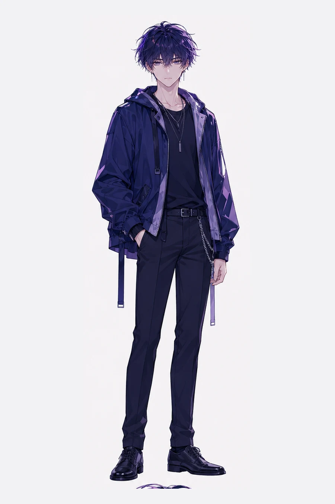
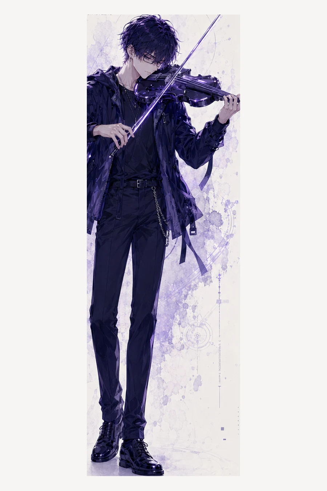
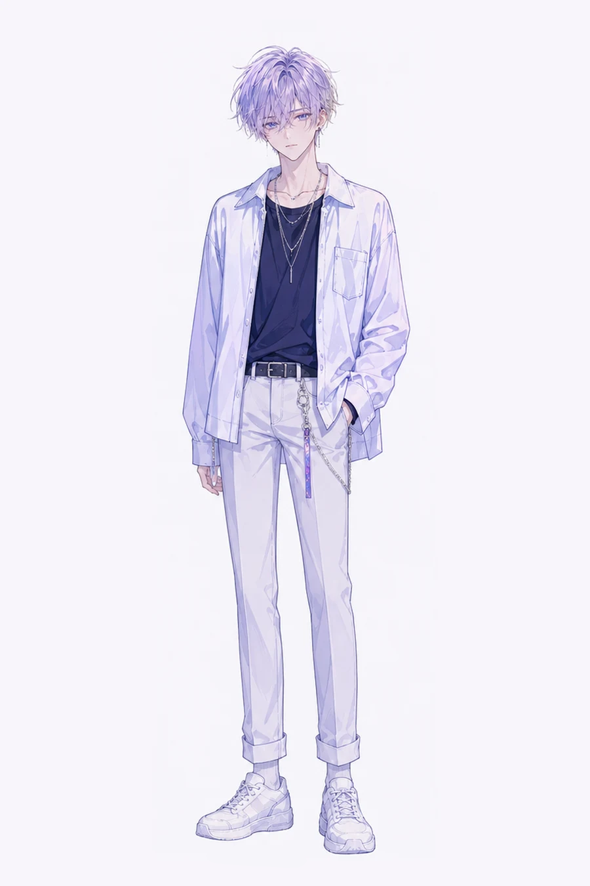
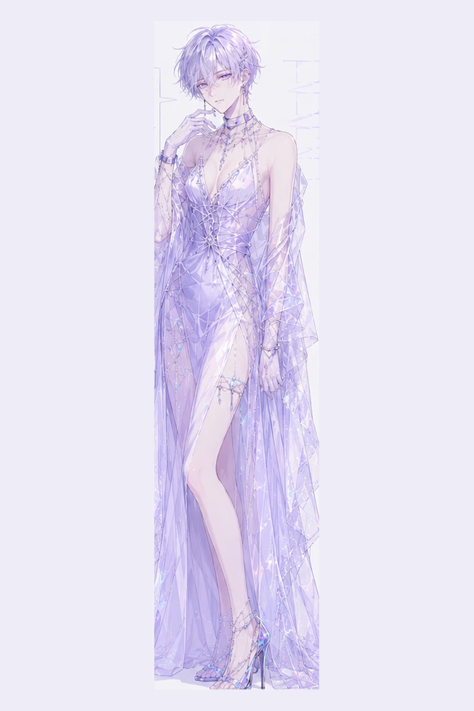
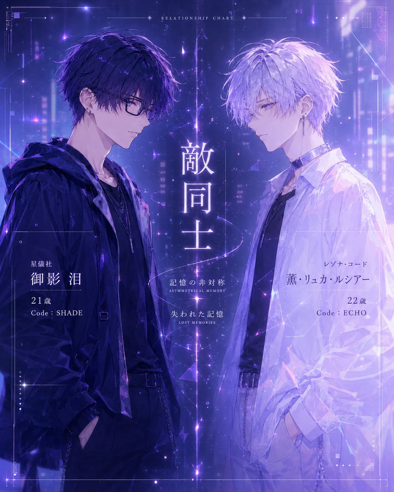
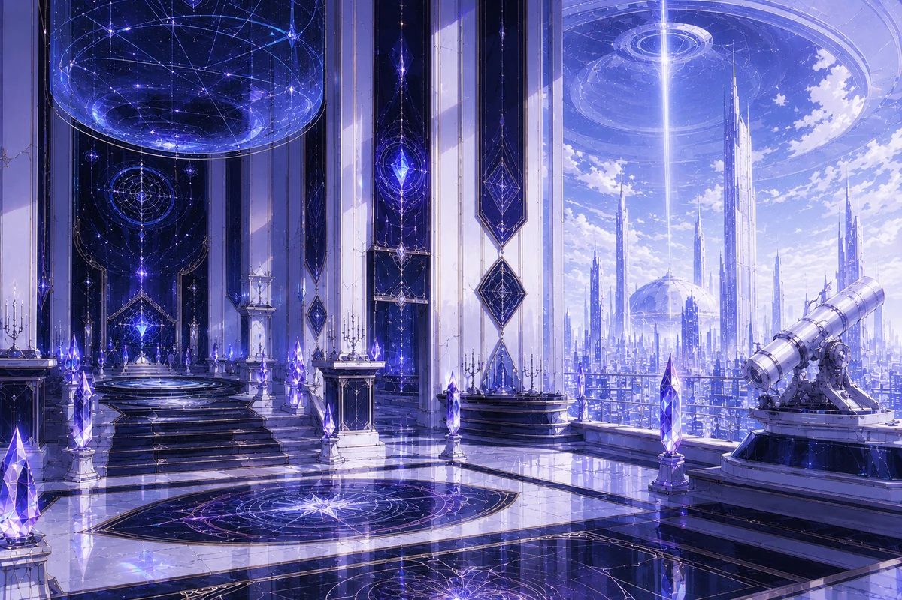
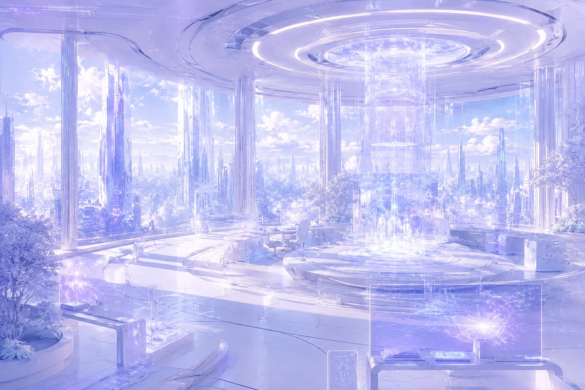
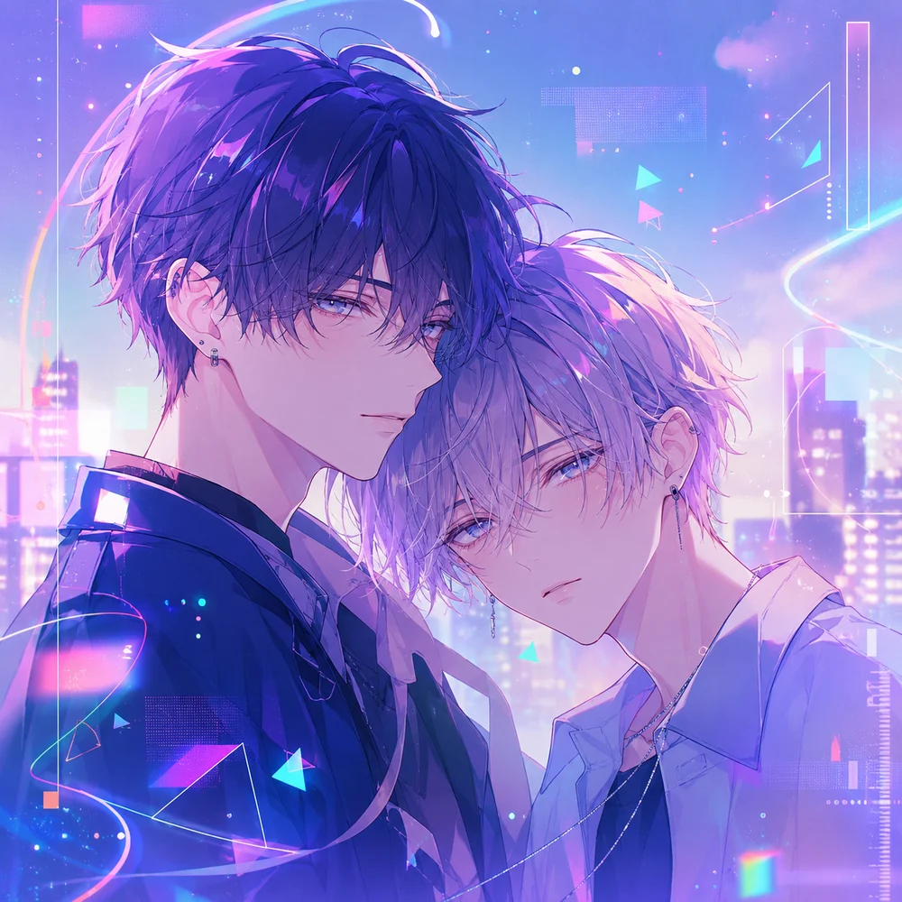

TAP — COMBATPROJECT 50by50
隣り合わせの、非対称。
対立×非対称×都市
運命だけが、ふたりを敵と呼ぶ。
近未来対立BLロマンス、開幕。
CHARACTERS / RELATIONSHIP
記憶を失った敵が、俺にだけ反応する。


TAP — COMBAT

TAP — INFILTRATION二人は対立していない。対立させているのは、運命。

ABOUT
近未来テクノ × 対立BL × 記憶処理。葛藤は二人の間ではなく、一人ひとりの内側にある。
A near-future bromance / soft BL visual novel.
Side by side, yet asymmetric.
50:50 CHECK
六つの選択で、任務と感情の比率を測る。
あなたは諜報員。任務の途中、六つの場面に出会う。
選んだ分だけ、比率が動く。
01 / 06
YOUR RATIO
#50by50 を添えて、あなたの比率を残していって。
WORLD
任務、潜入、記憶処理。敵対する組織に属する二人は、命令の上でだけ、敵になる。
ORGANIZATIONS

観測と儀式。黒と青紫の側。泪の属する場所。

記憶処理と共鳴。白とラベンダーの側。薫の属する場所。
TIKTOK
敵同士なのに、距離が近すぎる。— 最新話はTikTokで公開中。
TikTokで最新投稿を見る@renfew_ito 敵組織の諜報員に回収される敵組織の諜報員。任務中です。本当に任務中なんです。 ※本編前のif/番外です。銀髪の彼は、抱えてる相手との過去を覚えていません。 オリジナル曲🎧「Sweet Stain」 #創作BL #創作BL #敵同士 #50by50 #お姫様抱っこ ♬ オリジナル楽曲 - Renfew
MUSIC

PROJECT
当プロジェクトは、一次創作BLとして、物語・演出・構成・デザインを制作者Renfewが主導し、本人の手作業とAIアシストを併用して制作しています。